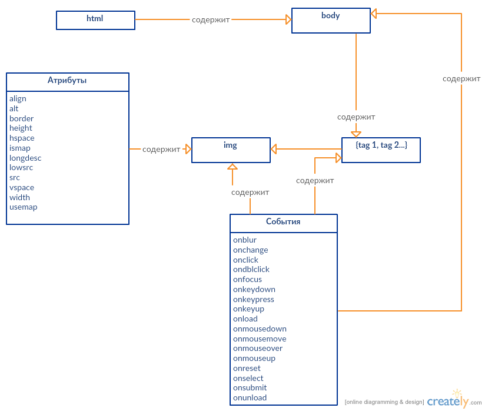

Личная стрница Захаровой Анстасии ИДБ-13-13
Описание тега
Тег <img> предназначен для отображения на веб-странице изображений в графическом формате GIF, JPEG или PNG. Адрес файла с картинкой задаётся через атрибут src. Если необходимо, то рисунок можно сделать ссылкой на другой файл, поместив тег <img> в контейнер <a>. При этом вокруг изображения отображается рамка, которую можно убрать, добавив атрибут border="0" в тег <img>.
Рисунки также могут применяться в качестве карт-изображений, когда картинка содержит активные области, выступающие в качестве ссылок. Такая карта по внешнему виду ничем не отличается от обычного изображения, но при этом оно может быть разбито на невидимые зоны разной формы, где каждая из областей служит ссылкой.
Синтаксис
<img src="URL" alt="альтернативный текст">
Атрибуты тега
Диаграмма тега
Пример работы тега <img>
UML для ЛР2